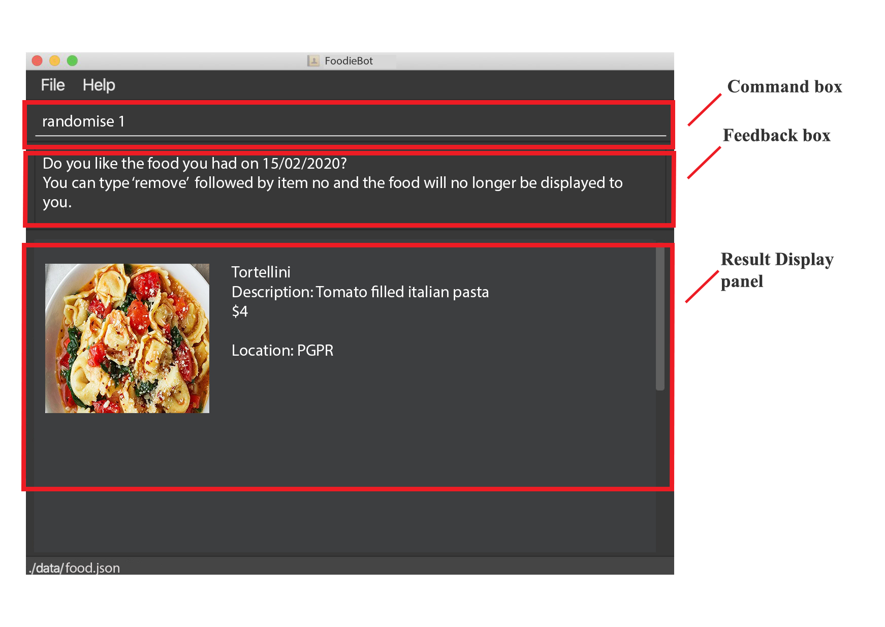

By: FoodieBot Team Since: Feb 2020 Licence: MIT
- 1. Introduction
- 2. About this Document
- 3. Quick Start
- 4. Features
- 4.1. List All Canteens:
list - 4.2. Go to Canteen:
goto - 4.3. View All Stalls in Canteen:
enter - 4.4. View All Food Items in a Stall:
enter - 4.5. Select the Food :
select - 4.6. Randomize Food Selection :
randomize - 4.7. Set a Budget :
budget set - 4.8. View Budget:
budget view - 4.9. View Expense Report:
report - 4.10. View Past Transactions:
transactions - 4.11. Review Food Items:
review - 4.12. Rate Food Items:
rate - 4.13. Set Food Items as Favorites:
favorites set - 4.14. View Favorited Food Items:
favorites view - 4.15. Remove Favorited Food Items:
favorites remove - 4.16. Filter Canteens or Stalls:
filter
- 4.1. List All Canteens:
- 5. FAQ
- 6. Command Summary
1. Introduction
FoodieBot is an all-in-one application created for students, staff and visitors, to help with everyday’s campus dining needs. Whether you need a random suggestion of what to eat, directions to get to the canteen, help in planning your budget for the week, or just want to see what each canteen has to offer, FoodieBot is here to provide for your needs.
2. About this Document
2.1. Symbols and Notations Used
The following are symbols and formatting used in this document:
|
Note
|
This symbol indicates important information. |
|
Tip
|
This symbol indicates tips for the particular feature. |
list - A grey highlight (called a mark-up) indicates that this is a command that can be typed into the command line and executed by the application.
2.2. Definition of Common Words Use
- GUI
-
Graphic User Interface is a type of interface that allows users to interact with.
2.3. How to Use this Document
Section 4. Features will introduce you to the commands for the application.
3. Quick Start
-
Ensure that you have Java 11 or above installed in your Computer.
-
Download the latest foodiebot.jar here.
-
Copy the file to the folder you want to use as the home folder for your FoodieBot.
-
Double-click the file to start the app. The Graphical User Interface(GUI) similar to the image shown below should appear in a few seconds.
 -
Type the command in the command box and press Enter to execute it.
e.g. typinghelpand pressing Enter will open the help window. -
Some example commands you can try:
-
list: Lists all canteens. -
enter The Deck: Display all the stalls location within The Deck. -
goto The Deck f/ COM1: Display direction to go to deck from COM1. -
exit: Go back to the previous view, if the application is at the main screen, the exit command will close the application
-
4. Features
Command Format
-
Words in
UPPER_CASEare the parameters to be supplied by the user e.g. inbudget set w/ AMOUNT,AMOUNTis a parameter which can be used asbudget set w/ 9.50 -
Items in square brackets are optional entries e.g
report [w/DATE]can be entered asreport [w/ 12-02-2020]or asreport.
4.1. List All Canteens: list
Displays a list of available canteens on campus.
Format: list
Parameters:
-
[f/BLOCK_NAME]- Displays canteens ordered by increasing distance from current location.
Examples:
4.2. Go to Canteen: goto
Displays a map with the route between the starting location and the destination. Includes instructions on how to travel there as well as bus services that go to the canteen.
Format: goto CANTEEN_NAME f/ CURRENT_LOCATION
|
Note
|
CANTEEN_NAME and CURRENT_LOCATION field has to be one of the suggestions. Otherwise an error message will be displayed telling the user to provide a valid CANTEEN_NAME and CURRENT_LOCATION.
|
4.3. View All Stalls in Canteen: enter
Displays the stalls available at the specified canteen.
Format: enter
Parameters:
-
INDEX: Enter the canteen with the entered index. -
CANTEEN_NAME: Enter the canteen with the entered name.
|
Note
|
Information about the cuisine sold at the stall, the rating of the stall and various other things will be implemented in v2.0. The stall’s rating is determined from the user’s past experiences of the food items which were selected. |
4.4. View All Food Items in a Stall: enter
Displays the food items available at the specified stall.
|
Note
|
This method works after entering a canteen. |
Format: enter
Parameters:
-
INDEX: Enter the stall with the entered index. -
STALL_NAME: Enter the stall with the entered name.
|
Note
|
Information about the cuisine sold at the stall, the rating of the food item and various other things will be implemented in v2.0. The stall’s rating is determined from the user’s past experiences of the food items which were selected. |
4.5. Select the Food : select
Saves the selected food into transactions to help the user track his history of food consumption.
Format: select
Parameters:
-
INDEX: Select the food with the given index from the list displayed on the GUI -
FOOD_NAME: Select the food with the given name from the list displayed on the GUI
|
Note
|
If a budget has been set up, the budget will be automatically reduced by the price of the selected food. |
Examples:

4.6. Randomize Food Selection : randomize
Displays a list of randomized suggestions of food.
Format: randomize
Parameters:
-
[c/ CANTEEN_NAME]- Produce a randomized list of foods from foods available at the particular canteen . -
[t/ TAG]- Randomize based on foods which are tagged with the tag provided.
Examples:

4.7. Set a Budget : budget set
Sets a daily, weekly or monthly budget. The budget can be changed.
|
Note
|
Changing the budget will reset the budget overview for the current budget cycle. For example, if you have $5 remaining from a weekly budget of $20, setting a new monthly budget of $150 will update your current budget settings to the new one, but at the same time resets both the start date of the cycle as well as the amount remaining. (But not to worry, your transactions are still saved!) |
Format: budget set PERIOD AMOUNT
Parameters:
-
AMOUNT: The maximum amount available to spend for the given time period. -
PERIOD: The length of the cycle that a budget is effective for and when it will refresh.List of values for
PERIODare:-
d/- Daily -
w/- Weekly -
m/- Monthly
-
|
Note
|
PERIOD field has to be one of the above suggestions.AMOUNT field has to be numeric (with or without decimal places).Otherwise an error message will be displayed requesting a correct type to be provided. |
Examples:
4.8. View Budget: budget view
Views the current budget, spendings made during the current budget cycle, as well as the remaining budget available to spend.
Format: budget view
4.9. View Expense Report: report
Generates a report of the spending and food purchases for the period specified.
Format: report
Parameters:
-
[f/FROM_DATE] [t/TO_DATE]- Generates report fromFROM_DATEuntilTO_DATE.-
Example:
report f/ 12-02-2020 t/ 30-04-2020
-
-
[w/DATE]- Generates report for the week (Monday-Sunday) of the input date.-
Example:
report w/ 12-02-2020
-
-
[m/MONTH]- Generates report of the input month.-
Example:
report m/ jan- Generates a report for the month of January for the current year. -
Example:
report m/ jul y/ 2019- Generates a report for the month of July of the specified year of 2019.
-
-
[y/YEAR]- Generates report of the input year.-
Example:
report y/ 2020
-
|
Note
|
FROM_DATE cannot be a future date.TO_DATE cannot be before the FROM_DATE, or the earliest possible date if the [f/] field is empty.
|
4.10. View Past Transactions: transactions
Displays the past transactions of food purchases for any period specified.
Format: transactions
Parameters:
-
[f/FROM_DATE] [t/TO_DATE]- Displays transactions from and till the given dates.-
Example:
report f/ 12-02-2020 t/ 30-04-2020
-
-
[w/DATE]- Displays transactions for the week (Monday-Sunday) of the input date.-
Example: transactions
w/ 12-02-2020
-
-
[m/MONTH]- Displays transactions of the input month.-
Example: transactions
m/ jan- Displays all transactions in the month of the current year. -
Example: transactions
m/ jul y/ 2019- Displays all transactions in the month of the specified year.
-
-
[y/YEAR]- Displays transactions of the input year.-
Example: transactions
y/ 2020
-
|
Note
|
FROM_DATE cannot be a future date.TO_DATE cannot be before the FROM_DATE, or the earliest possible date if the f/ field is empty.
|

4.11. Review Food Items: review
Reviews food items from the transactions user interface.
Format: review INDEX REVIEW
Parameters:
-
INDEX- This must be the first parameter and an index from the list has to be specified. -
REVIEW- This must be the second parameter and the review message cannot be blank.
Examples:
|
Tip
|
You can update existing reviews by using the same command. |
4.12. Rate Food Items: rate
Rates food items from the transactions screen. This rating is on a scale from 0 to 10.
Format: rate INDEX RATING
Parameters:
-
INDEX- This must be the first parameter and an index from the list has to be specified. -
RATING- This must be the second parameter and requires a rating for the food item.
Examples:
|
Tip
|
You can also update existing ratings by using the rate on the same food item. |
4.13. Set Food Items as Favorites: favorites set
Set food items from the stalls as favorites for easier access.
Format: favorites set INDEX
Parameters:
-
INDEX- This must be the first parameter and an index from the list has to be specified.
4.14. View Favorited Food Items: favorites view
View the food items that have been set as favorites.
Format: favorites view
4.15. Remove Favorited Food Items: favorites remove
View the food items that have been set as favorites.
Format: favorites remove INDEX
Parameters:
-
INDEX- This must be the first parameter and an index from the list has to be specified.
4.16. Filter Canteens or Stalls: filter
Filter canteens or stalls based on the tag entered.
Format: filter TAG
Parameters:
-
TAG- a label tag assiociated with the food item.
Examples:
5. FAQ
Q: How can I update the list of canteens if there are changes to the canteens on campus?
A: You can manually download foodiebot.json file which we have published here.
Q: Can I write my personal review in other languages?
A: Yes, FoodieBot accepts input for different types of language, however it does not support in-app localization.
6. Command Summary
| Command | Function | Example |
|---|---|---|
budget set PERIOD AMOUNT |
Sets a budget for the allocated period |
budget set w/ 9.50 |
budget view |
Views the current budget |
|
enter CANTEEN_NAME |
Displays the menu for the selected canteen |
enter The Deck |
favorites set |
Sets the food item in the stall as a favorite |
favorites set 1 |
favorites view |
Displays all favorited food |
favorites view |
filter |
Shows only canteens or stalls with a specified tag |
filter asian |
find nearest BLOCK_NAME |
Finds the nearest canteen from location |
find nearest COM1 |
goto CANTEEN_NAME f/ CURRENT_LOCATION |
Gets direction to canteen from the current location |
goto The Deck f/ COM1 |
list |
Displays the list of canteen |
|
rate INDEX |
Gives a rating to the stall |
|
randomize |
Displays a list of randomize options |
randomize c/ The Deck |
report |
Generates a report of the food consumed |
report f/ 12-02-2020 t/ 30-04-2020 |
review INDEX |
Creates a review for the stall |
|
select INDEX |
Saves the food in transactions |
|
transactions |
Generates the transaction breakdown |
transaction w/ 12-02-2020 |